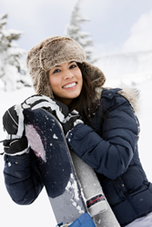
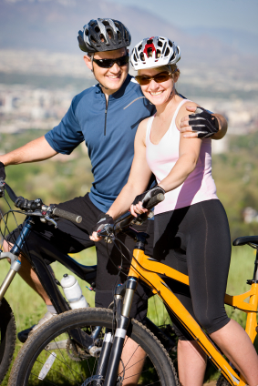

Thanks for the memories,
Thanks for the memories,
We wanted a memorable honeymoon experience, and so we looked into the excursions offered by Extreme Honeymoons. Something I always wanted to do was bow hunt.
We were surprised that a cougar hunt was available the week just after we were to be married. It was great to have all the details of this trip taken care of for us by professionals who knew just what was needed.
The owners even provided some archery instruction for both of us before the trip began. We met our hunt leader, Tom Henry, the first day of our trip. He runs a team of 4 hound dogs when he hunts cougars.
The hunt began just after a light snow, so the big cats could be tracked. We saw three cougars that day, but were not able to get any clean shots. It was a tiring, exciting, beautiful weekend.
Thanks so much, Extreme Honeymoons, for a memorable honeymoon experience. We are sending a couple of snapshots of our great weekend.
Thanks for the memories,
I had always wanted to try heliskiing, and my honeymoon seemed as good a time to go for it. Both my wife Mary and I are experienced downhill skiers, but we had never tried extreme skiing or snowboarding before.
 It was wonderful to be able to rely on your expert team of pilots and guides to make this dream come true. We were lucky to have new powder snow the weekend we had booked the trip. Extreme Honeymoons even captured these great photos of our trip.
Kings Peak is the tallest peak in the state of Utah, and it was really amazing that we can now say that we skied it. We were able to make 6 runs a day and each one was an adventure. I was worried about our ski and snowboarding equipment, but it was double checked by our guide and we had no problems.
We will tell all our friends about this great way to spend a honeymoon. Thanks for handling the details, so we could enjoy this experience together.Yours truly,
I wanted to give my new wife, Louise, an exciting honeymoon. I have been riding mountain bikes for about 5 years. Both Louise and I are in fairly good shape, so the mountain biking trip over the red rock of Moab was the trip we wanted for ourselves.
The bed and breakfast inn we stayed in down in Moab was great. We had an early breakfast and then were transferred along with our equipment and a light lunch to the trail head. We were provided with a map and GPS receiver and we were off.
The day was hot, about 90 degrees, but we had plenty of water and we never felt stressed. Every time we look at our photos from that weekend, we remember the wonderful time we had. The cost was sure reasonable and we could have never done this without your help.
 Thanks for the time of our lives,